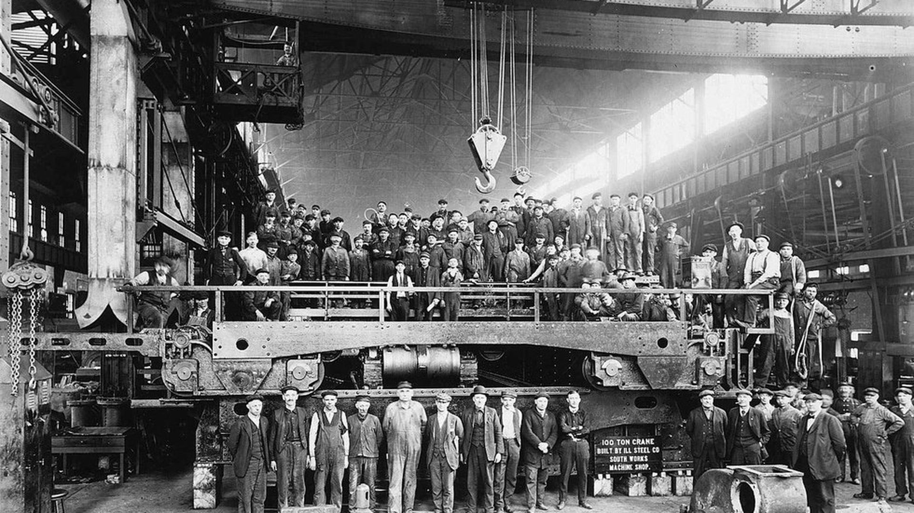
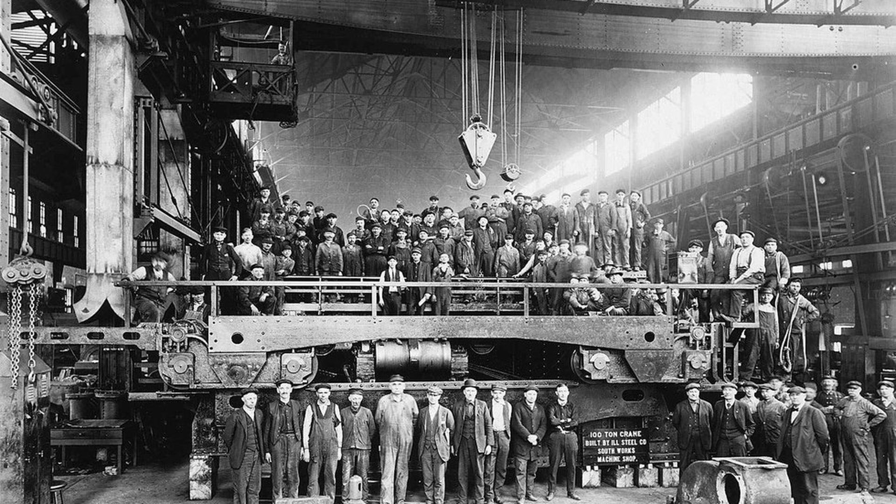

시계
시간을 나타내거나 시간을 재는 기계나 장치
View Details 

1. 기계공학의 원리를 응용하여 다양한 산업과 연관된 각종 기계기구, 산업 설비, 생산시스템 등을 연구·개발, 설계·제조하거나 생산 공정을 운영·감독한다.
2. 기계의 구성요소, 시스템 실현가능성, 설계, 운영 및 성능에 관해 연구하며, 기계의 고장이나 예상치 못한 문제를 파악하고 해결한다.
3. 제품을 위한 새로운 아이디어를 기획하고, 기계 및 시스템에 대한 세부사항을 설계한다.
4. 산업설비나 건설현장의 기계시스템의 설치, 변경, 위탁을 감독하고 검사하며, 기술자 및 다른 엔지니어를 감독한다.
5. 계산 및 비용 견적서, 보고서 등을 작성하고 검토한다.
6. 분야에 따라 산업기계공학기술자, 조선공학기술자, 항공기공학기술자, 철도차량공학기술자, 자동차공학기술자로 분류한다.
지금까지 만들어진 모든 기계발명이 인간의 수고를 덜어 주었는지 의문입니다.
아시다시피, 저는 기계 엔지니어입니다.

수학은 실용적이고 개념적이어야 하지만 기계적이어야 하기도 합니다.

나는 항상 기술과 성장에 집중해왔지만 책임 관리를 할 핵심 역량이 없다. 나는 기계 엔지니어다.

나는 기계 기술자다. 나는 손으로 물건을 만들 수 있다.

나는 기계공학이 선교 사업에 그다지 도움이 되지 않는다는 것을 깨달았다.

마이크로소프트는 CES 2019에서 주목받은 커넥티드카 기술에 자사의 클라우드와 인공지능을 접목하고, 자동차 관련 기업 및 단체와의 협업을 통해 미래 자동차 기술 개발을 지원하고 있다고 밝혔다.
itworld
토성 최대 위성 타이탄은 초기 지구와 유사한 형태로, 생명체 생존 가능성이 전부터 제기돼왔다. 미 항공우주국(NASA)이 타이탄 지표면 탐사를 위한 '드론 탐사'를 계획하고 있어 주목된다.
joins파워 수트는 이제 현실이 되려 한다. 엑소바이오닉스(Ekso Bionics)도 이런 강화 외골격을 현실화하려는 개발사 가운데 하나다.
techholic한국기계연구원(이하 기계연)은 해외 선도 기관과의 기계 연구 분야를 비교·분석한 보고서를 통해 앞으로 한국 기계 산업이 나아갈 방향을 제시했다.
mfgkr2017년 세계경제포럼이 선정한 12가지 떠오르는 기술 대부분이 새롭게 교체됐지만, 3D 프린팅 기술은 여전히 유망기술로 꼽혔다.
sciencetimes